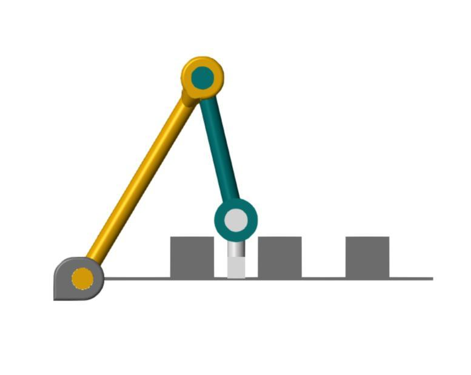
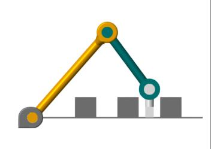
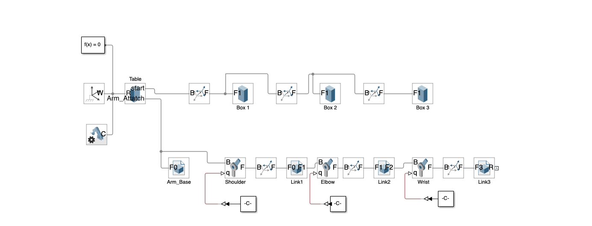

Three-Axis Planar Manipulator
Software Onshape · MATLAB · Simscape Multibody
Design and reach
I designed a three-link planar arm to move a 10 cm sphere between three fixed obstacles. The links measure 80, 50, and 15 cm. At pickup and drop-off, the last link has to point straight down so the arm can reach into the gaps.
Checking reach
In CoverTaskSpaces.m, I swept the shoulder and elbow angles and plotted the arm at each step. These lines from the drop-off sweep adjust the wrist so the three angles always add up to −90°.
q2 = q2 -2.479;
q3 = -90 - q2-q1;Solving the two poses
In CalcQ.m, I set the tip target to (52.5, 5) cm for pickup or (82.5, 5) cm for drop-off. Working back from the tip gives the wrist position. From there, the law of cosines gives the triangle angles needed to set the shoulder and elbow.
q1 = alpha + beta;
q2 = theta2 - 180;
q3 = angle_of_attack - q1 - q2;I applied each set of angles to the assembly in Simscape. In both front views, the last link points down into the gap between obstacles.


Simscape wiring
The model splits at the table. The upper branch places the three obstacle boxes using rigid transforms. The lower branch attaches the arm base to the table and connects the shoulder, elbow, and wrist joints through the three links.
Each joint receives its own constant angle through a Simulink-PS Converter. Changing those three inputs switches the assembly between the calculated pickup and drop-off poses.
